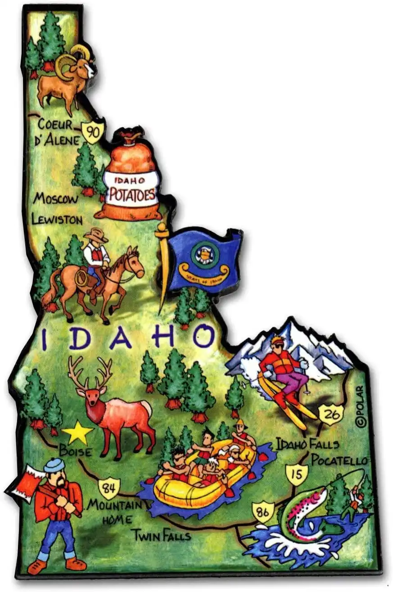

Fish Haven Idaho
Weather Summary
Currently:
High: °F
Wind Chill: °F
Humidity: %
Wind Speed: mph
Five Day Forecast
Featured article: Family Activities
Fish Haven, originally named Rush Creek, is an unincorporated community along the shores of Bear Lake in Bear Lake County, Idaho, United States. It is 4 km (2.5 miles) north of the Utah border. August, July and June are the most pleasant months, while January and December are the least comfortable months. It's an undiscovered paradise. Most people who drive by recognize the raw beauty of a place ringed by high desert mountains and bordered by the shores of a vast natural lake. In winter the hills outside this small paradise echo with the sharp whine of snow machines and in the summer thousands of tourists ply the lake's bright blue waters with water skis or fishing poles.